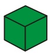

<!DOCTYPE html>
<html>
<head>
	<meta charset="UTF-8">
	<link href="../css/style_mock.css" rel="stylesheet" />
</head>
 <body>
<script type="text/javascript" src="../../mock_code.js"></script>
<script>

//todo - Read question from notepad
var questions = [
["Which of these is a Cone?"," How many were left?","4","5","7","2","C"],
["4 tens and 4 ones = ____","40","4","44","0","C"],
["A toy shop had 9 kites, Lakshya bought all 9 kites. <BR> How many are left? ","9","1","0","8","C"],
["Lavanya had 10 roses. She gave 4 to Riddhima, How many roses are left with Lavanya","10","4","6","0","C"],
["What comes in after :  10__","12","11","9","13","B"],


]


</script>
<table><tr>
  <td class="timer-pic"></td><td class="timer-text"><p id="demo" ></p></td> 
</tr>
</table>
<h2 id="test_status"></h2>
<div id="test"></div>
</body>
</html>
